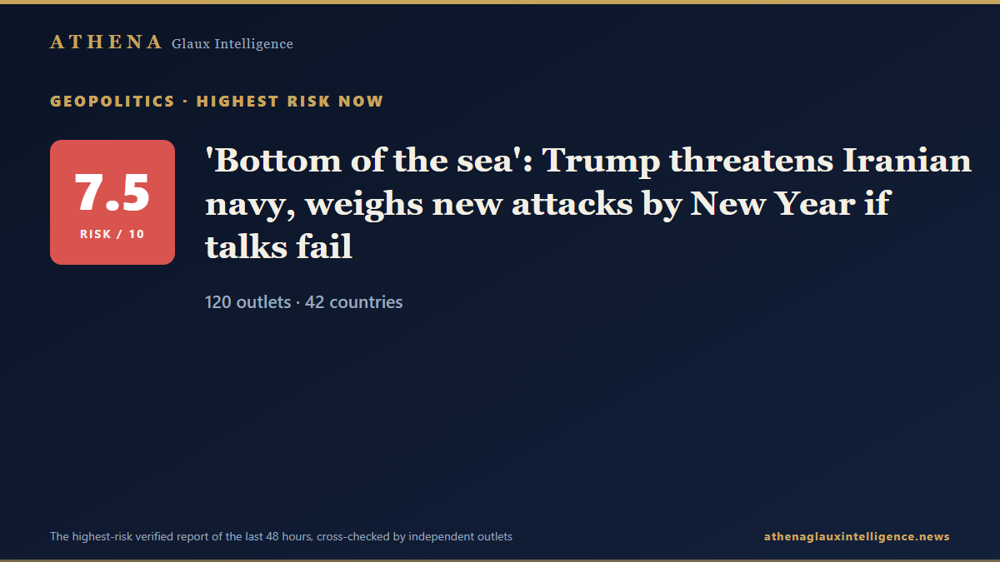
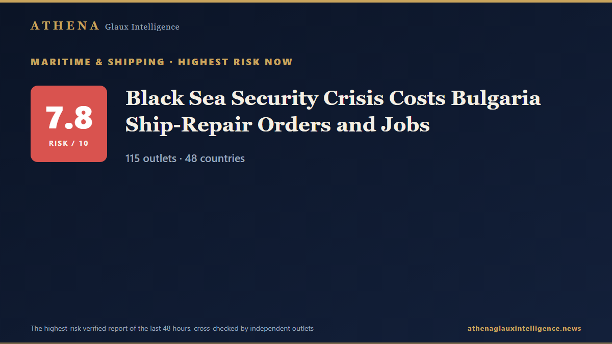

Risque 7.5Élevé
ATHENA Glaux Intelligence — Veille mondiale de l'information — chaque chiffre expliqué
Géopolitique
Toute la géopolitique >Risque le plus élevé maintenant

Risque en hausseHausse au cours des dernières 24 heures
Maritime et transport
Bureau maritime >Risque le plus élevé maintenant
Risque 7.8Élevé
Black Sea Security Crisis Costs Bulgaria Ship-Repair Orders and Jobs
Voir les preuves ›
Liste de surveillanceDétroits, ports et autres reportages maritimes
- Strait of HormuzPerturbéattack / strike · risk 7.6 · 22 newsrooms (72 h)
- Danish Straits / BalticPerturbéattack / strike · risk 7.8 · 117 newsrooms (72 h)
- Kerch Strait / Black SeaPerturbéattack / strike · risk 7.8 · 117 newsrooms (72 h)
Chaque titre, vérifié dans plusieurs pays.
ATHENA Glaux suit 633 médias dans le monde. Une information devient un événement vérifié seulement lorsque des médias indépendants la rapportent. Chaque événement indique qui l'a publiée en premier et un score de risque avec ses raisons.
1 242événements en 24 h
633médias suivis
35minutes entre deux mises à jour
Séisme ou inondation près de chez vous cette semaine ?
Saisissez votre ville et voyez les séismes, inondations, tempêtes et alertes officielles à proximité, avec une liste du kit d'urgence 72 heures. Gratuit, sans inscription, et votre lieu reste sur votre appareil.
Des articles arrivent de médias indépendants : quand deux se rejoignent sur la même histoire, un événement vérifié naît.
Comment ATHENA vérifie une information
- CollecterLes reportages arrivent de médias indépendants dans de nombreux pays.
- CroiserQuand deux médias se rejoignent sur la même information, elle devient un événement vérifié.
- ExpliquerChaque événement montre qui était le premier, jusqu'où il s'est propagé et pourquoi le risque est ce qu'il est.
 Géopolitique
GéopolitiqueUS Intelligence Chief Says Putin Is 'Not America's Friend In Ukraine'
Trump’s description of Putin as a friend during the APEC summit drew criticism from European allies of Ukraine. de The Straits Times
6.2Importance
3.4Risque · modéré
92%Confiance
Les titres sont affichés en anglais, tels que publiés.
Géopolitique
Endurance athlete swims in Strait of Hormuz to highlight Iran war's impact on wildlife
British endurance swimmer Lewis Pugh has swum in the North Pole and Antarctica to draw attention to environmental causes. de Mainichi (English)
Commerce et industrie
Washington governor calls ICE 'out of control' after Seattle airport arrests
The governor of Washington state called US federal immigration agents “out of control” after they arrested two people at Seattle’s main airport on Saturday. de Dawn
Sponsorisé
Cybernetics and Artificial Intelligence Lab Welcome to the Cybernetics and Artificial Intelligence Laboratory, established at the Department of Business Administration of the National and Kapodistrian University of Athens. The lab is headed by Professor Dimitrios Thomakos. The lab aims to do research that can be published in top venues. Our research uses tools and methods of Artificial Intelligence, and lies in the following areas: - Forecasting - Decision making - Cyber security - Finance We are always looking forward to collaborating with exceptional students!
En savoir plus – Cybernetics and Artificial Intelligence LabNavires dans les détroits du monde en ce moment
Comptages AIS en direct. Touchez ou survolez une barre pour le détail.
Derniers reportages
Everything you need to know about Don Toliver 'tear gas' incident as Co-op Live evacuated
Retail sales volumes jump 2.2%, biggest rise since December 2021
OpenAI chief scientist urges industry limits on AI development
Trump to welcome investors at gala for his plunging meme coin
In Istanbul, thousands protest closure of pro-opposition Turkish media outlets
Landmine blast kills 5 children in northwest Syria: state media
US ports face surge in cyberattack attempts, threatening vital trade routes: Report
Carney, opposition leaders trade comedic jabs at press gallery dinner
Énergie et environnement
EU officials reject Cop31 deal as it 'doesn't speak to reality of the climate crisis' – video
The Cop31 climate talks fell into disarray as the EU, UK and allies in the developing world rejected what they called an unacceptable deal on the future of the climate. de Guardian Environment
Technologie et cyber
Countries agree to work toward ‘killer robots’ pact
GENEVA, Nov 20 - UN talks on rules for autonomous weapons headed into overtime on Friday with some nations including Russia dragging their feet and negotiators considering a non-binding deal on arms… de The Straits Times
Énergie et environnement
Fossil Fuels Missing In New COP31 Draft Deal, Tensions Remain Unresolved
Fossil fuels are a flashpoint at the climate talks and the summit comes against a difficult backdrop of soaring energy prices and geopolitical tensions stemming from the war in Iran. de NDTV World
Géopolitique, politique et sécurité
Plus ݃lections et politique
With US midterms underway, courts rebuff Trump's pressure on state election officials
Nov 3 - In the hours before polls opened for the US midterm elections on Tuesday, federal judges issued a series of rulings restricting the Trump administration's unprecedented efforts to pressure… de The Straits Times
- Guerres et conflits
Three Russian missiles flew into Poland Friday, prosecutors say
- Élections et politique
Trump on ’60 Minutes’ Reflects on Midterm Loss, Death and Forgiveness: ‘I Do Hate Some of My Enemies’
- Diplomatie et sommets
Trump keeps trying to connect with Kim Jong Un, but the North Korean leader has ghosted him: report
- Élections et politique
US Democrats clinch a historic House majority of at least 258 seats, the largest since 1992
Économie, finance et marchés
Plus ›Banques et crédit
Israel investigates West Bank fires blamed on settlers
Israeli authorities have launched an investigation into the vandalism and arson of Palestinian vehicles and properties in several West Bank villages, attributed to Israeli settlers. de Arab News
- Actions, obligations et marchés
NZX gains 1.3% for the week despite late NZX 50 fall – Market close
Sources: New Zealand Herald - Inflation et taux d'intérêt
US Dollar Index (DXY) trims losses ahead of US inflation data
- Logement et immobilier
Constitution may be amended to permanently ban AL if needed: Shahe Alam
- Emploi et salaires
Beyond Degrees: Skills Take Centre Stage in Hiring
Commerce, industrie et infrastructures
Plus ›Aérien, rail et route
Vietnam Embassy celebrates Vietnamese Culture Day in Phnom Penh
The Embassy of Vietnam in Cambodia has hosted a cultural showcase in Phnom Penh to mark Vietnam Culture Day, spotlighting the country’s traditional culinary heritage and its world-renowned noodle… de Khmer Times
- Aérien, rail et route
Delta system outage delays 1,300+ US flights
- Infrastructures critiques
US intelligence chief warns of further technology disruptions amid system upgrades
- Infrastructures critiques
Russian Corvette Merkury Reportedly Destroyed in Explosion at Libya’s Benghazi Port
- Commerce et accords
Canada, India on the cusp of finalizing free trade deal, says high envoy
Énergie, ressources et environnement
Plus ›Climat et politique climatique
Azerbaijan praises Türkiye's COP31 presidency, calls for continued global climate action
Azerbaijan has expressed appreciation to Türkiye for hosting the 31st Conference of the Parties (COP31) to the United Nations Framework Convention on Climate Change (UNFCCC), highlighting the… de AzerNews
- Climat et politique climatique
COP31 fails to reach consensus on Antalya Pact
- Eau et ressources
Chow Kon Yeow rebuts Lim Guan Eng’s RM210m claim, says Penang won’t pay for undelivered water
- Pétrole et gaz
US Army set to detonate ageing explosives despite risk of toxic fallout
- Électricité
Russian attacks cause power outages in five Ukrainian oblasts
Technologie, IA et cybersécurité
Plus ›Puces et calcul
US seeks answers on Nvidia’s sale of chips to China: Bessent
He said the chipmaker’s board of directors is working to determine what had happened. de The Business Times
- Intelligence artificielle
Exclusive-Like SpaceX, Anthropic ran an unusual IPO process, chafing some bankers
- Espace et satellites
2 probes enter orbit around Mercury on Japan-Europe joint mission
- Espace et satellites
Honda to launch new hybrid Avancier SUV in Japan after debut in Thailand
- Espace et satellites
Little Mercury gets its first visitor in years as a pair of spacecraft loop into orbit
Entreprises et investissement
Plus ›Start-up et innovation
More than 2,300 Indian Sikh pilgrims arrive in Pakistan to mark Guru Nanak's birthday
LAHORE: Over 2,300 Indian Sikh pilgrims arrived in Pakistan through the Wagah Border on Sunday to attend celebrations marking the 557th birth anniversary of Baba Guru Nanak Dev Ji, the founder of… de Dawn
- Stratégie d'entreprise
Turkey freezes assets of 108 people in fund scandal: report
- Fusions et acquisitions
Sanofi rumoured to be eyeing high-profile Insmed takeover
- Capital-risque et financement
Health Committee chair condemns 'effort to discredit' CHU chief after she raised staffing concerns
- Secteurs et risques
Defense, AI, High Tech: A Delicate Balance Between Armies and Industry
Accidents et urgences
Plus ›Accidents et urgences
3 killed, one injured in a shooting in US State of Ohio
Gunfire results in death of 19-year-old man, 45-year-old man – the father of the baby’s mother – and 17-year-old girl. de Anadolu Agency (English)
- Accidents et urgences
Bezzecchi wins Portuguese MotoGP sprint, Marc Marquez crashes
- Accidents et urgences
Death Toll From Bayelsa Boat Accident Rises To 29
- Accidents et urgences
Pedestrian, 60s, dies after hit-and-run in Co Mayo
- Accidents et urgences
Titanic survivors diamond ring sells for £150,000 at auction
Trois façons de lire aujourd'hui
Commencez par celle qui convient à votre tempsÉvénements vérifiés
Classés selon l'ampleur de la couverture
- COP31 fails to agree on climate deal138 médias · 61 paysRisque 3.5
- Netanyahu and Eisenkot parties resume talks to form Israel government159 médias · 56 paysRisque 5.0
- The Alice Huang Associate Accused of Funneling Nvidia Chips to China146 médias · 47 paysRisque 4.4
- Libya reports drone attack on Russian ship in Benghazi104 médias · 42 paysRisque 6.7
- COP31 climate talks collapse as EU and others reject deal59 médias · 33 paysRisque 2.4
Bureau d'évaluation
Posez une question et lisez une évaluation argumentée d'un sujet majeur, avec ce qui la démentirait.
Ouvrir le Bureau d'évaluation ›Aujourd'hui en chiffres
| 02:00 | 213 |
|---|---|
| 03:00 | 252 |
| 04:00 | 312 |
| 05:00 | 292 |
| 06:00 | 414 |
| 07:00 | 292 |
| 08:00 | 385 |
| 09:00 | 519 |
| 10:00 | 795 |
| 11:00 | 473 |
| 12:00 | 275 |
| 13:00 | 474 |
| 14:00 | 23 |
| 15:00 | 337 |
| 16:00 | 0 |
| 17:00 | 8 |
| 18:00 | 1069 |
| 19:00 | 828 |
| 20:00 | 358 |
| 21:00 | 205 |
| 22:00 | 169 |
| 23:00 | 314 |
| 00:00 | 233 |
| 01:00 | 243 |
Risque des événements du jour
Géopolitique91Commerce et industrie31Économie et marchés26Énergie et environnement25Technologie et cyber18Entreprises16Maritime2
Signaux émergents
- Nouveau nom dans l'actualité · ActifEmir of Daura
- Hausse soudaine · ActifBenghazi
- Nouveau nom dans l'actualité · ActifDymer
- Hausse soudaine · ActifKhartoum
- Hausse soudaine · ActifMurat Kurum
Alertes officielles
- M 6.5 - Vanuatu regionM6.5 · USGS ·
- M 5.9 - 238 km SW of Yanglong, ChinaM5.9 · PAGER yellow · USGS ·
- Orange notification for tropical cyclone AKVAN-26. Population affected by Category 1 (120 km/h) wind speeds or higher is 0 (20.826 million in Tropical Storm).Orange · GDACS ·
Restez informé
ATHENA Weekly Risk Picture
Les plus grands risques géopolitiques, économiques et maritimes de la semaine, recoupés et notés.
Chaque vendredi à 8 h (heure d'Athènes) · gratuit · en anglais
S'abonner gratuitementATHENA sur Telegram
Les nouvelles dès leur publication : les événements urgents de risque 6 ou plus, un récapitulatif horaire, les mises à jour des suivis de risque et le briefing quotidien à 10 h.
Gratuit · publications en anglais · désinscription à tout moment
Rejoindre le canalL'inscription est gérée par beehiiv avec double confirmation : rien de ce que vous saisissez n'est envoyé à ATHENA, et chaque numéro contient un lien de désinscription.
Suivi des risques
Plus ›Détroit d'OrmuzRisque 7.611 nouveaux événements cette semaine · en baisse (41 la semaine précédente)Mer RougeRisque 6.330 nouveaux événements cette semaine · en baisse (49 la semaine précédente)Grèce et TurquieRisque 3.55 nouveaux événements cette semaine · en baisse (11 la semaine précédente)ChypreRisque 5.016 nouveaux événements cette semaine · stable par rapport à la semaine précédenteSanctions contre la RussieRisque 4.817 nouveaux événements cette semaine · en hausse (11 la semaine précédente)Guerre en UkraineRisque 7.1239 nouveaux événements cette semaine · en baisse (286 la semaine précédente)Proche-Orient : Israël et GazaRisque 6.873 nouveaux événements cette semaine · en baisse (91 la semaine précédente)TaïwanRisque 1.510 nouveaux événements cette semaine · en baisse (17 la semaine précédente)Pétrole et gazRisque 3.930 nouveaux événements cette semaine · en baisse (54 la semaine précédente)Canal de SuezRisque 0.03 nouveaux événements cette semaine · en hausse (1 la semaine précédente)Détroits turcsRisque 0.00 nouvel événement cette semaine · en baisse (1 la semaine précédente)Canal de PanamaRisque 0.00 nouvel événement cette semaineFlotte fantômeRisque 0.02 nouveaux événements cette semaine · en baisse (3 la semaine précédente)Navigation en mer NoireRisque 7.63 nouveaux événements cette semaine · en baisse (10 la semaine précédente)Banques centrales et tauxRisque 4.147 nouveaux événements cette semaine · stable par rapport à la semaine précédenteÉconomie grecqueRisque 2.88 nouveaux événements cette semaine · stable par rapport à la semaine précédenteÉnergie en Méditerranée orientaleRisque 0.02 nouveaux événements cette semaine · en baisse (7 la semaine précédente)BalkansRisque 3.019 nouveaux événements cette semaine · stable par rapport à la semaine précédenteMigration en MéditerranéeRisque 0.02 nouveaux événements cette semaine · en baisse (3 la semaine précédente)
Risques mondiaux — semaine 47, 2026 (16–22 nov.) ›
Dans le monde
EuropeSouth Africa hit back against Ireland in thrilling Dublin test
56 événements
Moyen-Orient et Afrique du Nord'Bottom of the sea': Trump threatens Iranian navy, weighs new attacks by New Year if talks fail
54 événements
Amérique du NordWaymo recalls robotaxis after they drove into closed freeway lanes
52 événements
Asie du Sud-EstVietnam Embassy celebrates Vietnamese Culture Day in Phnom Penh
52 événements
Asie du SudCandy factory fire in Indonesia not fully extinguished, about 50 missing
51 événements
Afrique subsaharienneCOP31 climate talks collapse as EU and others reject deal
43 événements
Russie et EurasieZelensky says Crimean Bridge strikes ‘fair response’ as he meets UK’s Streeting
40 événements
Asie de l'EstTrump keeps trying to connect with Kim Jong Un, but the North Korean leader has ghosted him: report
38 événements
OcéanieForum Chair backs Australia’s COP31 role as Albanese defends conference spending
34 événements
Amérique latine et CaraïbesCrime Costs Brazil US$74B as Lula Waits
24 événements